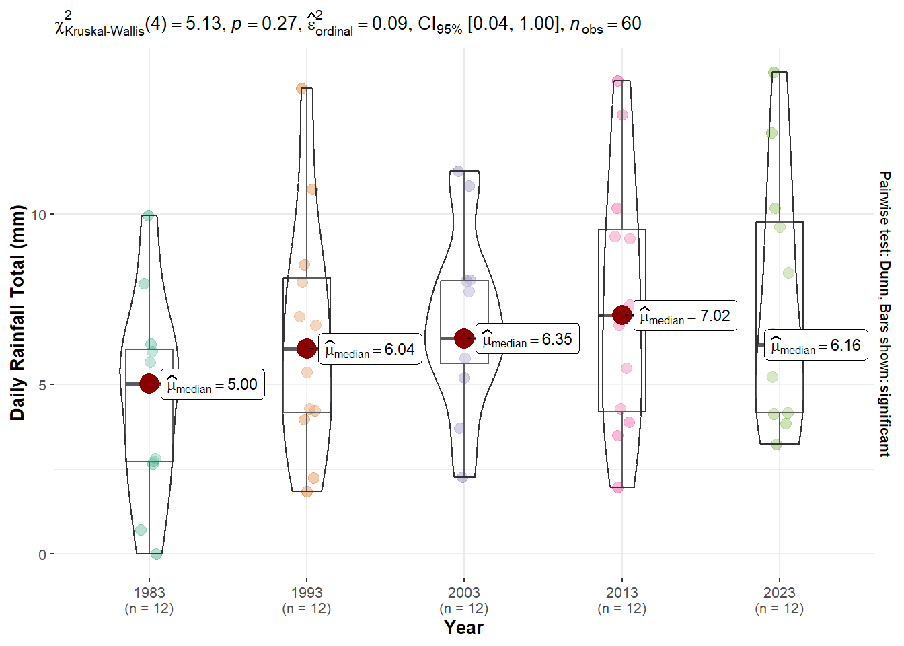

pacman::p_load(tidyverse, ggstatsplot, ggridges, ggdist)Be Weatherwise or Otherwise
1. Setting the Scene
1.1 Background
This is the take home exercise 3 of ISSS608 Visual Analytics and Applications. In this exercise, we are instructed to analyze the historical weather data downloaded from Meteorological Service Singapore website to understand the weather change trend in Singapore.
Meteorological Service Singapore website provides the historical daily weather indicators for all the 63 stations in Singapore that can be traced back to January 1980. The weather indicators that are available includes:
- Daily Rainfall Total (mm)
- Highest 30 min Rainfall (mm)
- Highest 60 min Rainfall (mm)
- Highest 120 min Rainfall (mm)
- Mean Temperature (°C)
- Maximum Temperature (°C)
- Minimum Temperature (°C)
- Mean Wind Speed (km/h)
- Max Wind Speed (km/h)
For the interest of this exercise, we’ll focus on the daily rainfall column, and use the visualization techniques learned in class to study the data patterns.
1.2 Data
Meteorological Service Singapore website allows us to download the data in csv format by year and month. In each csv file, there are daily records of the above mentioned weather information. To keep the scope of this exercise simpler, we downloaded the data from Sentosa Island station for the following time periods:
- Year 1983: January to December
- Year 1993: January to December
- Year 2003: January to December
- Year 2013: January to December
- Year 2023: January to December
Therefore, a total of 60 csv files were obtained.
2. Understanding the Data
2.1 Installing and loading the required libraries
In this exercise, we’ll make use the following R packages:
- tidyverse: an opinionated collection of R packages designed for data import, data wrangling and data exploration
Let’s use the code chunk below to load the required R packages.
2.2 Importing the data
Since the data is distributed in different files, let’s first create a program to loop through all the csv files, and combine the rainfall data into one dataframe.
# Set folder path
folder_path <- "../../Data/Weather_Sentosa"
# List all CSV files in the folder
csv_files <- list.files(path = folder_path,
pattern = "\\.csv$")
# Initialize an empty list to store data frames
data_list <- list()
# Loop through each CSV file and import the data
for (file in csv_files) {
# Construct the full path to the CSV file
file_path <- file.path(folder_path, file)
# Read the CSV file and store it in the list
data <- read_csv(file_path,
col_select = c(`Year`, `Month`, `Day`, `Daily Rainfall Total (mm)`),
na = "-"
)
# Store the data frame in the list
data_list[[file]] <- data
}
# Combine all the data into one dataframe
RF_data <- bind_rows(data_list)
# Save the dataframe into a csv file
write_csv(RF_data, "../../Data/Weather_Sentosa/Weather_Sentosa_RF.csv")Then, let’s import the rainfall data from the csv file.
RF_data <- read_csv("../../Data/Weather_Sentosa/Weather_Sentosa_RF.csv")We have now combined all the data into one single dataframe called RF_data. There are 1,825 rows and 4 numerical variables as listed below:
- Year
- Month
- Day
- Daily Rainfall Total (mm)
2.3 Preparing Data
To prepare the data for the plots in the later sections, we’ll convert the first 3 columns (i.e., Year, Month, Day) into factor columns.
RF_data$Year <- as.character(RF_data$Year)
RF_data$Month <- as.character(RF_data$Month)
RF_data$Day <- as.character(RF_data$Day)
RF_data$Year <- factor(RF_data$Year, levels = c("1983", "1993", "2003", "2013", "2023"))
RF_data$Month <- factor(RF_data$Month, levels = c("1", "2", "3", "4", "5", "6", "7", "8", "9", "10", "11", "12"))
RF_data$Day <- factor(RF_data$Day, levels = c("1", "2", "3", "4", "5", "6", "7", "8", "9", "10", "11", "12", "13", "14", "15", "16", "17", "18", "19", "20", "21", "22", "23", "24", "25", "26", "27", "28", "29", "30", "31"))3. Data Visualization
In this section, we’ll make use of the visualization techniques learned in class to study the trend of rainfall in Singapore.
3.1 Rainfall trend over the years
Since we have the rainfall data for 5 years which are 1983, 1993, 2003, 2013 and 2023. It’d be interesting to see if there is any temporal trend from 1983 to 2023.
To achieve this, we’ll first compute the average rainfall for each month per year, and perform one-way ANOVA test to check the significance of the differences.

RF_data_monthly <- RF_data %>%
group_by(Year, Month) %>%
summarise_at(vars(`Daily Rainfall Total (mm)`),
funs(mean(.,na.rm = TRUE)))
ggbetweenstats(
data = RF_data_monthly,
x = Year,
y = `Daily Rainfall Total (mm)`,
type = "np",
mean.ci = TRUE,
pairwise.comparisons = TRUE,
pairwise.display = "s",
p.adjust.method = "fdr",
messages = FALSE
)
Interpretation
The plot shows that there are some differences across the years in terms of the daily total rainfall amount. However, they are not statistically significant at 5% significance level as the p value is greater than 0.05. Therefore, we can conclude that no significant changes observed in total daily rainfall from 1983 to 2023 in general.
3.2 Breaking down by month
Next, let’s study the data pattern for each month to see if there is really no significant trend across years.
ggplot() +
geom_line(data=RF_data_monthly,
aes(x=Year,
y=`Daily Rainfall Total (mm)`,
group = Month),
colour="darkgreen") +
facet_grid(~Month) +
labs(axis.text.x = element_blank(),
title = "Average Daily Rainfall (mm) by Month from 1983 to 2023") +
xlab("") +
ylab("Average Daily Rainfall (mm)") +
theme(axis.text.x = element_text(angle = 90))
Interpretation
The plot echoed the observation we made in the previous section that there isn’t significant trend in the rainfall amount from 1983 to 2023, even after breaking down by month except February. The rainfall amount in February displayed an upward trend from 1983 to 2023.
3.3 Seasonal trend of rainfall
In this section, we’ll investigate if there is any seasonal trend exhibited in the data.
ggplot(RF_data_monthly,
aes(Month,
Year,
fill = `Daily Rainfall Total (mm)`)) +
geom_tile(color = "white",
size = 0.1) +
coord_equal() +
scale_fill_gradient(name = "Average Daily Rainfall (mm)",
low = "sky blue",
high = "dark blue") +
labs(x = NULL,
y = NULL,
title = "Average Daily Rainfall (mm) by Month") +
theme(axis.ticks = element_blank(),
plot.title = element_text(hjust = 0.5),
legend.title = element_text(size = 8),
legend.text = element_text(size = 6) ) +
scale_y_discrete(limits = rev(levels(as.factor(RF_data_monthly$Year))))
Interpretation
Contradicts to what we hypothesized, there is no clear cut of wet months and dry months from the data collected at Sentosa Island station. Although there is generally more rainfall in year end than in the middle of the year, we can’t see a clear seasonality pattern across the years.
For example, the raining season seems to start from July in 1983, October in 1993, December in 2003, September in 2013 and November in 2023. It could be due to the weather station I have chosen for this exercise. Sentosa Island is closer to the sea, and it’s probably more influenced by the sea wind.
4. Conclusion
Through the study of the